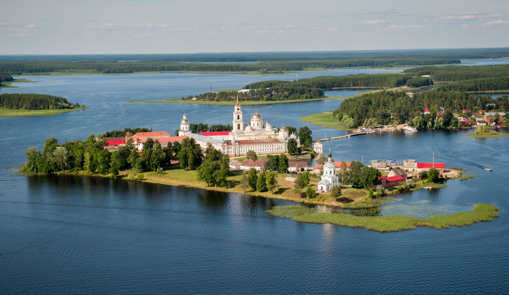
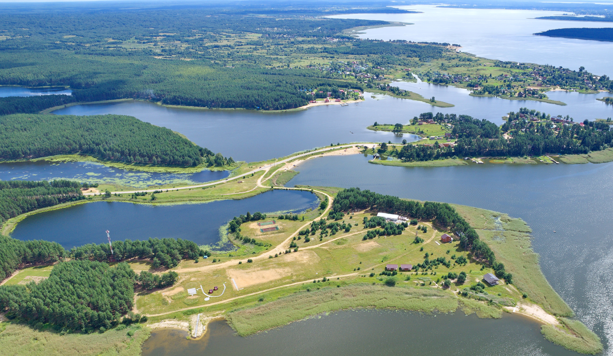
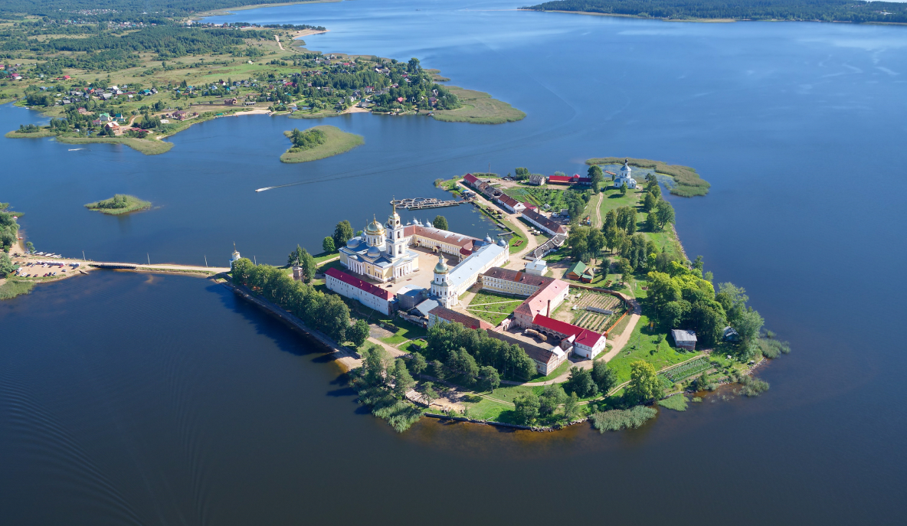

Выбери участок в лучшей локации
- Волга — одна из самых величественных и красивых рек в России, а также самая многоводная в Европе. Ее путь простирается через обширные леса, горы и холмы.Растительный и животный мир реки впечатляет своим многообразием.Это место силы с богатой историей и уникальной природой, идеальное для жизни, отдыха и ведения бизнеса.
- Валдай по праву называется озерным краем, здесь расположено несколько десятков озер. Самые крупные из них — Велье, Селигер, Ужин, Ильмень, Боровно.Район отличается кристально чистым воздухом,а незабываемые виды на чистые и глубокие лесные озера Валдая делают это место особенным.
- Территория подойдет тем, кто высоко ценит индивидуальность, высококлассную инфраструктуру. Здесь есть все, что необходимо для жизни и отдыха в гармонии: прекрасная экология, ощущение свободы и городской уровень комфорта. Открывается много возможностей для отдыха: прогулки на лодках и яхтах, дайвинг, катание на гидроциклах, пейнтбол, купание, рыбалка, охота, зимние виды спорта, зимняя рыбалка
- Селигер — одно из красивейших озер европейской части России. Это не просто озеро, а система озер, соединенных между собой короткими проливами, образуя настоящий водный лабиринт. Здесь можно насладиться отличной рыбалкой, собирать грибы и ягоды, а также отправиться в увлекательное путешествие по озеру на лодке, чтобы посетить Нилову пустынь — овеянный легендами действующий монастырь
Смотреть участки
- 

- 
- 